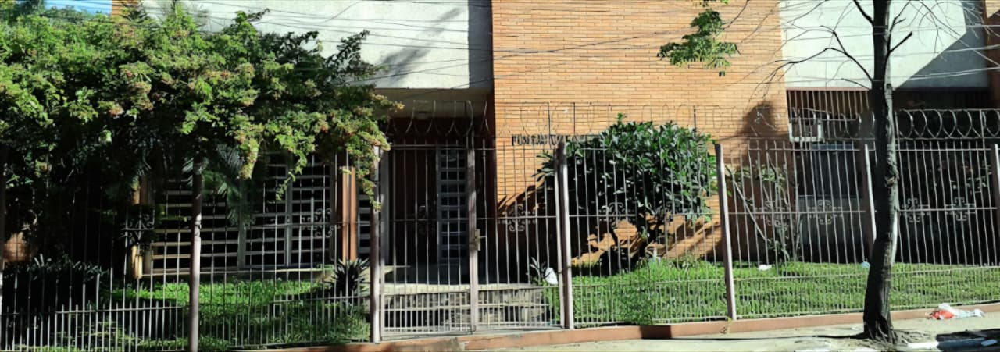

Entidad civil · Paraguay
Patrimonio, historia
y compromiso
institucional desde 1951
La Fundación La Piedad fue constituida por la familia Barbero Crosa para dar continuidad a las instituciones impulsadas por el Dr. Andrés Barbero, manteniendo vigente su compromiso social.
Historia
Origen institucional
El Dr. Andrés Barbero, farmacéutico y médico, dedicó su vida a la salud pública y la docencia. Ocupó cargos como decano de la Facultad de Medicina, director del Departamento de Higiene y Asistencia, intendente de Asunción y ministro de Economía.
Mientras se construía el Hogar de Ancianos, el Dr. Barbero falleció el 14 de febrero de 1951. Posteriormente, sus hermanas sobrevivientes resolvieron, el 29 de junio de 1951, crear una asociación con patrimonio propio bajo la denominación de Fundación La Piedad.
Objeto fundacional
Continuar una misión de servicio
La Fundación La Piedad tiene por objeto cooperar en el sostenimiento de las instituciones de beneficencia y cultura iniciadas por el Dr. Andrés Barbero, preservando su legado social y humanitario.
Entidades amparadas
Instituciones amparadas por la Fundación
Espacio vinculado a la Fundación
Museo Etnográfico "Dr. Andrés Barbero"
El museo forma parte del legado cultural sostenido por la Fundación La Piedad y se presenta como un apartado propio por su relevancia histórica.